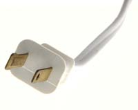

Did you know that your TV is consuming energy even when you're not using it? In fact, according to the U.S. Department of Energy, 75 percent of the electricity that powers home electronics is consumed while these devices are turned off! If that sounds like a high figure, consider that most home electronics - including stereos, computers, televisions and DVD players - are using standby power anytime they're switched off, and that adds up quickly when these devices are plugged in 24 hours a day.
Electricity consumed when the power is turned off is called a phantom load, ghost load or vampire load, and they're common not only in home electronics, but in many home appliances as well, such as stoves, washers and dryers.
That electricity shows up on your bill just the same as if you were using it for something more rewarding, and it makes the same contribution to air pollution, global warming and other environmental problems. The good news is that if you're looking for ways to save energy, reducing phantom loads is an easy, painless way to start. Here are a couple of strategies to try.
Turn it off, then unplug it. For any electrical device you would like to turn completely off, this is the foolproof way to do it. Take that phantom loads!
Consolidate your cords with power strips. It can be a hassle to unplug multiple cords, so many energy experts recommend plugging all those cords into power strips to make it easy to turn off all the devices at once. A newer type of power strip called the smart strip can make this even easier. Use one with your computer or TV, and it turns off all the peripheral devices automatically. (Here's a short video explaining how it works.)
Measure and target phantom loads. In many cases you can guess which appliances are most likely to have phantom loads ? start with anything with a remote control or a digital display. Look around and you may be surprised at how many you have. But there's a simple way to find out exactly how much power each gadget uses. An inexpensive home meter such as the Kill-a-Watt can help you measure the electrical use of all your appliances and electronics. It's an easy way to find which devices are burning a lot of power whether they're turned on or off.
Find energy-efficient products. Another way to avoid phantom loads is to look for energy-efficient products whenever you're shopping. A good place to start is by looking for an Energy Star label. You also can check out the Department of Energy's recommendations for buying products that use minimal standby power, and use this database to check how much standby power certain products use.
Looking for more strategies for saving energy? Here are a few more energy saving tips. Share your own energy-saving strategies in the comments section below.
|
 ISTOCKPHOTO/DAVID H. LEWIS Many home electronics and appliances consume power anytime they're plugged in, even when they're turned off. |
|
|